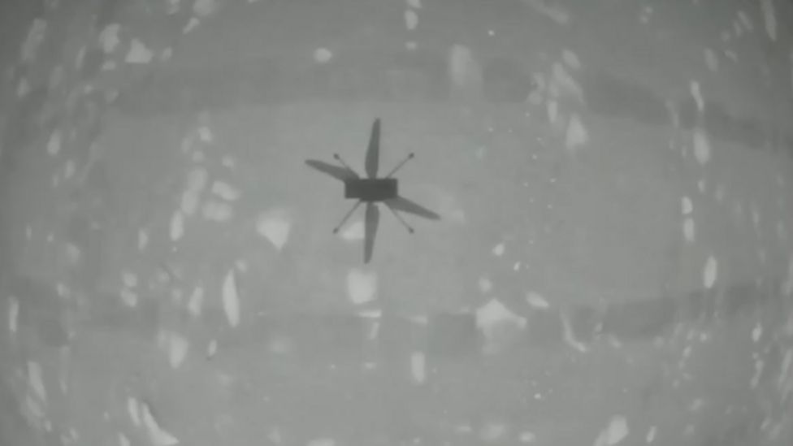
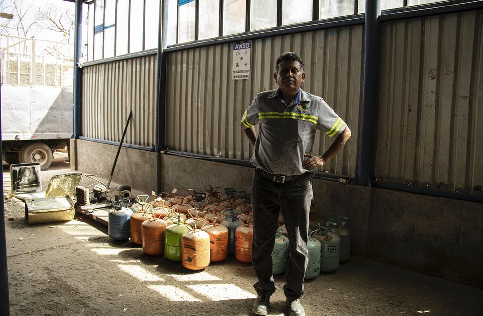

The drone, called Ingenuity, was airborne for less than a minute, but Nasa is celebrating what represents the first powered, controlled flight by an aircraft on another world. confirmation came via a satellite at Mars which relayed the chopper's data back to Earth. The space agency is promising more adventurous flights in the days ahead. Ingenuity will be commanded to fly higher and further as engineers seek to test the limits of the technology.
The rotorcraft was carried to Mars in the belly of Nasa's Perseverance Rover, which touched down in Jezero Crater on the Red Planet in February.
"We can now say that human beings have flown a rotorcraft on another planet," said a delighted MiMi Aung, project manager for Ingenuity at Nasa's Jet Propulsion Laboratory (JPL) in Pasadena, California. "We've been talking for so long about our 'Wright Brothers moment' on Mars, and here it is." This is a reference to Wilbur and Orville Wright who conducted the first powered, controlled aircraft flight here on Earth in 1903. Ingenuity even carries a small swatch of fabric from one of the wings of Flyer 1, the aircraft that made that historic flight at Kitty Hawk, North Carolina, more than 117 years ago.
Nasa has announced that the "airstrip" in Jezero where Perseverance dropped off Ingenuity for its demonstration will henceforth be known as the "Wright Brothers Field". The International Civil Aviation Organization (ICAO) - the United Nations' civil aviation agency - has also presented the Nasa and the US Federal Aviation Administration with an official ICAO designator: IGY, call-sign INGENUITY. A successful maiden outing means that a further four flights will be attempted over the coming days, each one taking the helicopter further afield. The hope is this initial demonstration could eventually transform how we explore some distant worlds. Drones might be used to scout ahead for future rovers, and even astronauts once they eventually get to Mars.

Around the world, there are teams of people who are working to track down and destroy hidden sources of greenhouse gases - stopping them from harming the planet. Some of the gases, which are used in refrigeration, have many times the global warming potential of carbon dioxide. On the outskirts of Guatemala City, Ángel Toledo runs a waste disposal company dealing with metal, plastic and glass.
For the last three years they've also started dealing with refrigerant gases - which contribute to climate change. He siphons the gases from household appliances like fridges into refrigerant recovery machines. They are then transferred to a huge tank that's taken to be destroyed once it's full. It's a tangible measure of what Ángel has helped save.
Over the last century, the most commonly used gases were CFC (chlorofluorocarbons) and HCFC (hydrochlorofluorocarbons). But when it was discovered they were causing a hole in the ozone layer in the 1980s, they were banned under the Montreal Protocol. Some of them were also potent greenhouse gases: one, called R12 - a CFC - had a global warming potential almost 10,000 times that of CO2. A single 30lb canister of this gas contained the equivalent of 131 tonnes of CO2 in terms of it global warming potential. This is the equivalent of the average UK car driving just over a million kilometres.